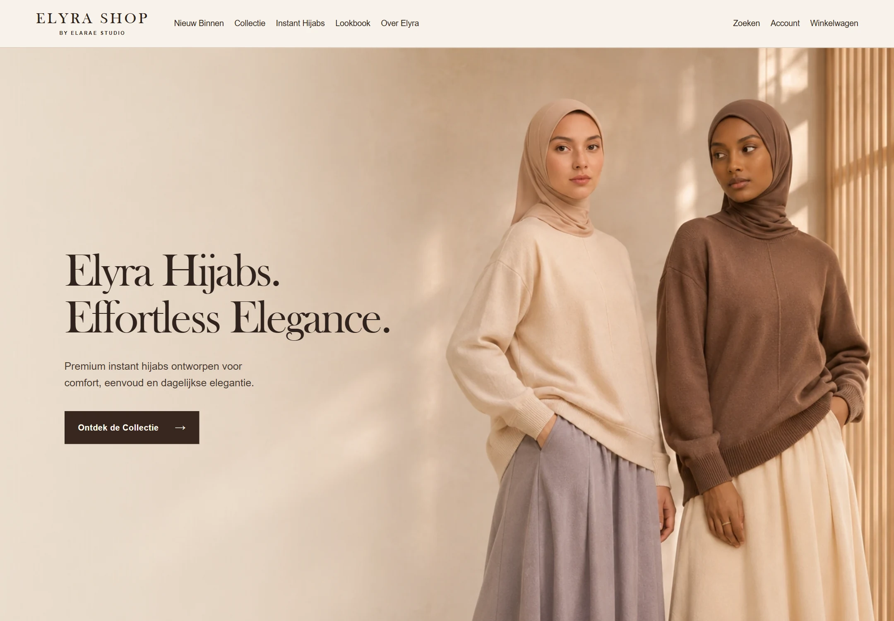
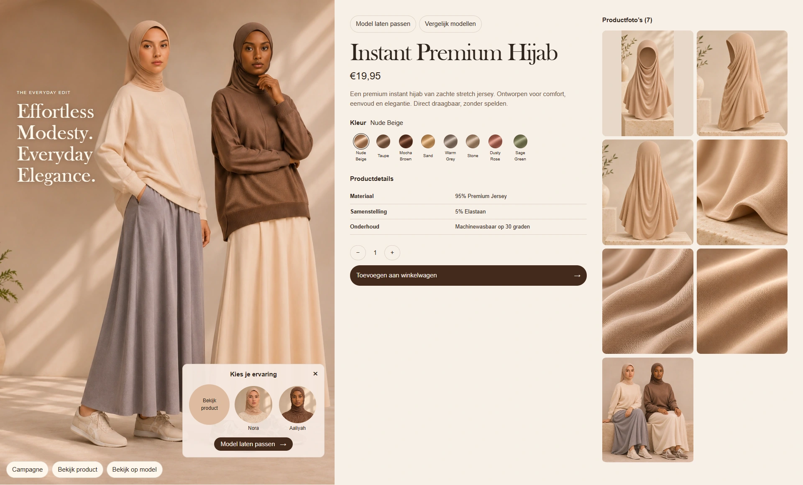
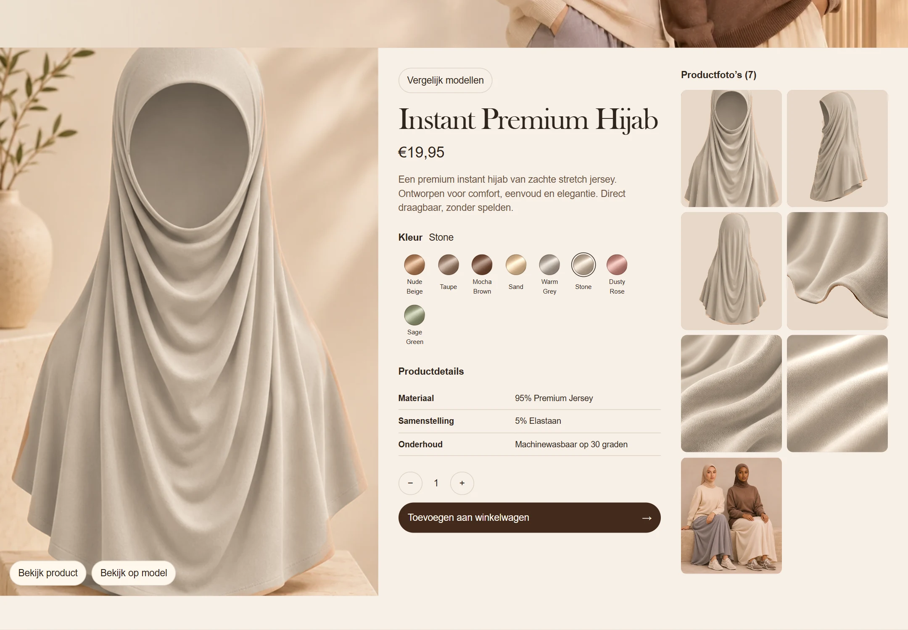
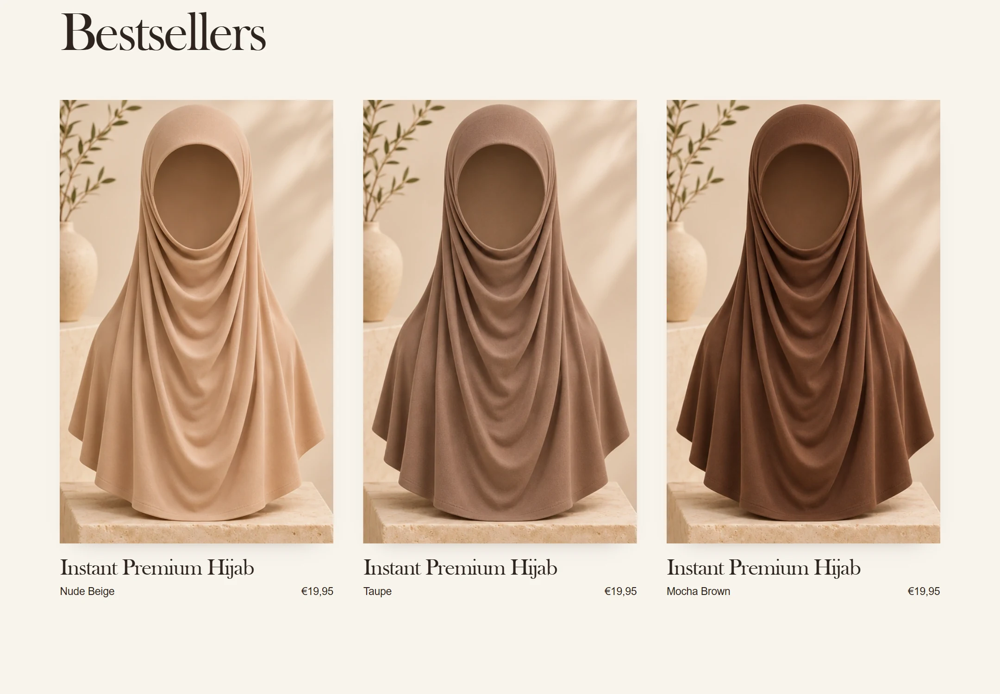
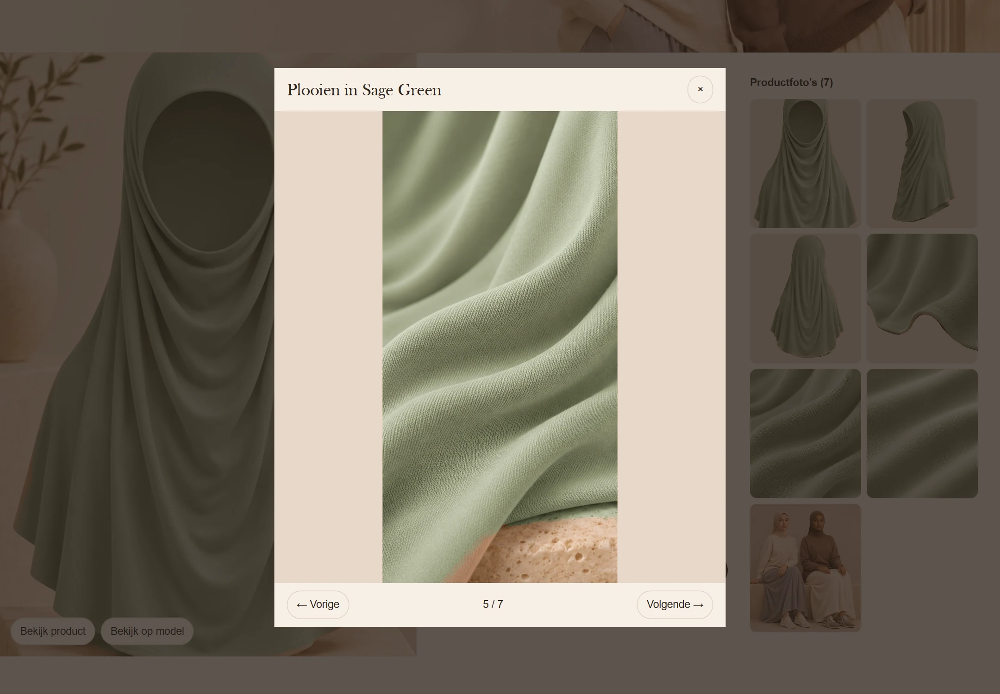
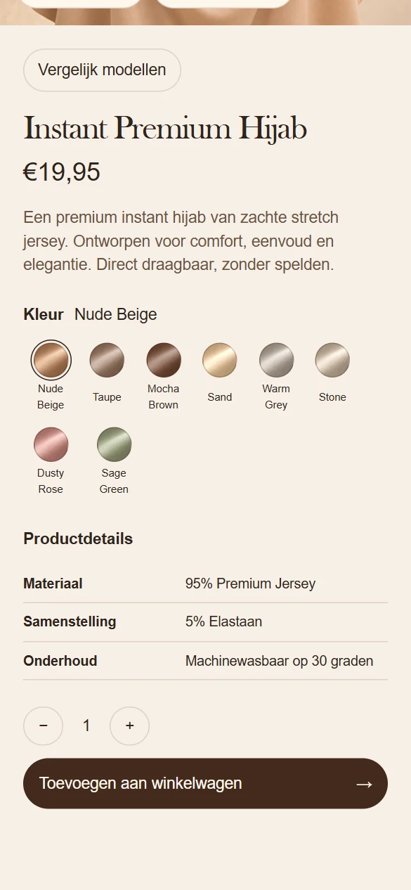

Elarae Studio / Modest fashion · E-commerce concept / Case study
Elyra Shop
Een duidelijke keuze begint bij de structuur.
Een conceptuele webshop waarin uitstraling en bediening dezelfde richting volgen.
Voor Elyra Shop bracht Elarae Studio oriëntatie, vergelijking en selectie onder in één winkelroute. De ontwerpkeuzes richten zich op een concrete vraag: welke informatie is nu nodig om verder te kunnen, en welke verdieping kan wachten?
Van eerste indruk naar keuze.
De montage volgt de winkelroute: oriënteren, vergelijken en kiezen. De winkelwagen bevestigt de selectie. Zo blijven de uitstraling en de bediening in dezelfde reeks zichtbaar.
De ontwerpaanpak in beeld
De route in beeld.Een montage van de bestaande schermen en projectbeelden.
15 sec. · Zonder geluid · Werkelijke projectbeeldenBekijk de opbouw van de showcase
- De campagne als opening
De twee modellen introduceren de visuele sfeer in hetzelfde brede beeldvlak als de rest van de montage.
- Model en kleur verkennen
De modelkeuze gaat over naar Nora en haar kleurweergaven. De volledige interface blijft beeldvullend.
- Een andere modelweergave
Aaliyah verschijnt in Stone en Mocha Brown binnen dezelfde schermindeling.
- Detail en bevestiging
De galerij geeft verdieping; de winkelwagen toont de gekozen variant.
- Een herkenbare afsluiting
De campagne keert terug met Elarae Studio en de bestaande signatuur.
Alle scènes gebruiken hetzelfde 16:9-kader. Bestaande fotografie krijgt een gerichte breedbeelduitsnede; echte websitestaten vullen hetzelfde beeldvlak. Geen verticale compressie, nieuwe modelbeelden of extra lege videomarges. 4K-export, 24 fps, zonder geluid.
Een opening met één duidelijke ingang.
Merkbeeld, kernboodschap en hoofdactie bepalen de opening. De foto laat ruimte voor tekst; de donkere knop krijgt voorrang binnen het rustige palet. De homepage biedt daarmee één logische ingang voordat meer keuze wordt getoond.

Verschil in rol, verschil in vorm
Serifkoppen dragen de visuele signatuur. Zakelijke interfacetekst ondersteunt het lezen en handelen. De typografie maakt die taakverdeling zichtbaar.
Contrast op het beslispunt
Neutrale kleuren houden de omgeving rustig. Donkere acties en gemarkeerde opties trekken aandacht waar een beslissing nodig is.
Keuze in de juiste volgorde
De opening leidt naar het overzicht. Pas daar krijgt het aanbod meer ruimte. Dat voorkomt dat de eerste indruk direct een afweging tussen veel opties vraagt.
Eén selectie, overal herkenbaar.
Opties, beelden en informatie delen dezelfde selectiestatus. De gekozen variant wordt benoemd en gemarkeerd; galerij en vergroting volgen mee. Daardoor blijft duidelijk welke optie wordt bekeken, ook tijdens het verdiepen.


Stone is geselecteerd. Naam, gemarkeerde optie en productbeelden tonen dezelfde keuze.
Mocha Brown volgt dezelfde logica. De beelden veranderen mee; de indeling en bediening blijven op hun plaats.
Waarde voor het merk
Een keuze werkt door in het hoofdbeeld, de galerij en de vergroting. Die afstemming houdt de actieve variant herkenbaar tijdens het vergelijken.
Waarde voor de bezoeker
De vergroting opent binnen de bestaande context en ondersteunt pijltoetsen. Extra detail vraagt zo geen nieuwe pagina of hernieuwde selectie.
Van overzicht naar keuze.
Productkaarten maken het aanbod scanbaar. De detailpagina groepeert prijs, eigenschappen en opties rond één actie. Aanvullende beelden geven verdieping zonder de hoofdroute te verlaten.


Het overzicht ondersteunt het vergelijken. De vergroting geeft extra detail binnen de bestaande pagina, zonder de gekozen variant te verliezen.
Een duidelijke vervolgstap
De winkelwagen bewaart variant en aantal. Een bevestiging na toevoegen en een zichtbaar totaal maken de uitkomst van de handeling duidelijk. Lokale opslag houdt de selectie beschikbaar bij een volgend bezoek in dezelfde browser.
Een andere indeling, dezelfde logica.
Op mobiel blijven de beslissingen in dezelfde volgorde staan: oriënteren, kiezen, verdiepen. Meerdere kolommen worden één verticale route; de navigatie vouwt op in een menu. De logica blijft intact terwijl de indeling verandert.

Beeld en bediening krijgen ruimte volgens hun taak. De galerij gebruikt twee kolommen om details bereikbaar te houden binnen de beperkte schermbreedte.
De samenhang zit in de keuzes.
- Eén herkenbare hoofdactie per context
- Visuele hiërarchie voor informatie en opties
- Duidelijke feedback op een selectie
- Gesynchroniseerde productweergaven
- Verdieping binnen de productcontext
- Lokale opslag van de winkelwagen
Van ontwerp naar uitvoering.
De uitvoering houdt navigatie, inhoud en selectiestatus op elkaar afgestemd. De onderstaande middelen ondersteunen die samenhang.
Strategie
- Route van oriëntatie naar beslissing
- Prioritering van informatie
- Samenhang tussen merk en winkelervaring
Design
- Visuele hiërarchie en merkvertaling
- Interactieontwerp voor keuze en feedback
- Responsive overzichts- en detailpagina’s
Development
- Semantische paginaopbouw
- Gedeelde selectiestatus voor beeld en opties
- Dialogen en lokaal bewaarde winkelwagen
Samenhang tot aan de volgende stap.
Elarae Studio ontwerpt uitstraling en gebruiksgemak vanuit dezelfde structuur. Elke pagina geeft richting; elke selectie krijgt bevestiging. Voor een onderneming betekent die aanpak een herkenbare website waarin mensen begrijpen waar zij zijn, wat zij kiezen en hoe zij verdergaan.
Zelfstandig portfolio-concept. Winkelwagen en variantselectie werken lokaal; betalingen, accounts en orderverwerking zijn niet gekoppeld. De beschreven meerwaarde betreft ontwerpintenties, geen gemeten verkoopresultaten.